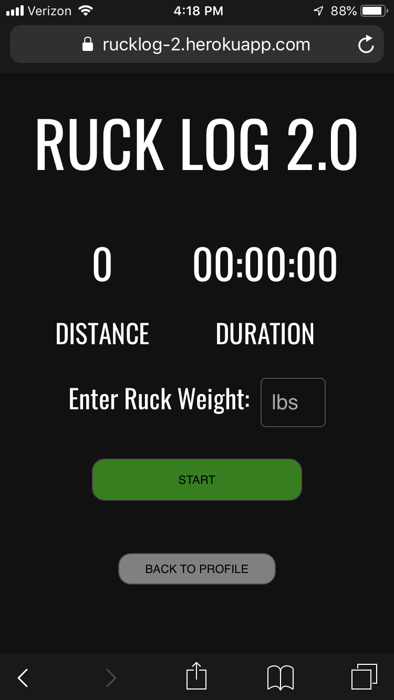
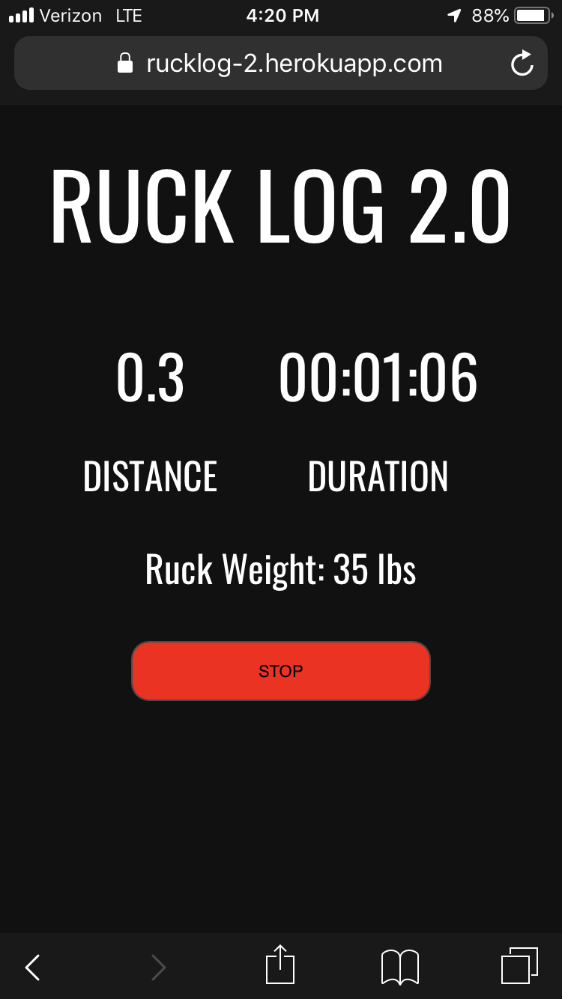

Casey Gillan
I'm a full stack developer with a passion for problem solving and functional design. I've worked
in
advertising,
finance, and law enforcement and I am interested in new opportunities to take on new challenges.
Ruck Log


A 'map my run' for Rucking (Carrying a weighted pack on your back) that
allows users to enter the weight
of
their ruck and tracks and saves their workout.
Tech: React/Express/PostgreSQL
Geolocation/Google Maps API
Geolocation/Google Maps API
Phrasenado
A simple phrase game built with vanilla javascript that challenges players
to guess a common phrase as
the
letters spin on the screen.
Tech: Javascript/HTML/CSS
If you're working on a cool project and would like to collaborate, please reach out!
I’m currently based in New York and available for full-time, freelance and part-time work.
I’m currently based in New York and available for full-time, freelance and part-time work.